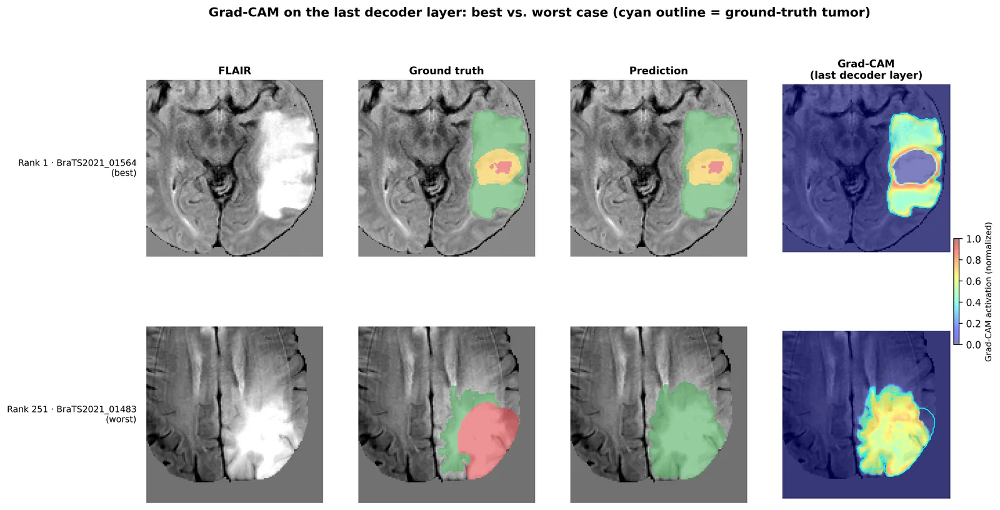

Flagship · Medical imaging · PyTorch
LatentGAT
Brain tumour segmentation with graph attention at the U-Net bottleneck
A 3D U-Net whose bottleneck is treated as a graph: each latent node attends to its 5 nearest neighbours across 4 heads, so distant tumour sub-regions share context before decoding. Trained on BraTS2021 (1,251 cases), then tested on three cohorts it had never seen.
- Checkpoint chosen by combined Dice + HD95 + NSD rank, not peak Dice alone.
- Failure analysis: across all 251 validation patients, 11.7% of necrotic-core voxels are labelled as edema. The worst cases are an intensified version of that same pattern.
- The 4-view test-time augmentation doubles as a per-voxel uncertainty map.
- Dice
- 0.869
- HD95
- 8.67mm
- NSD
- 0.894
- Parameters
- 1.87M
- Val. patients
- 251
- Ext. cohorts
- 3
